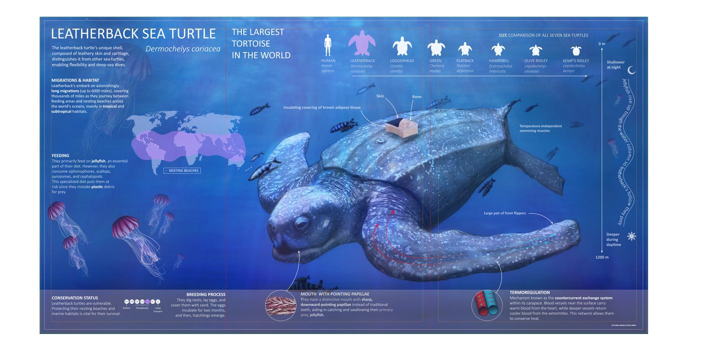
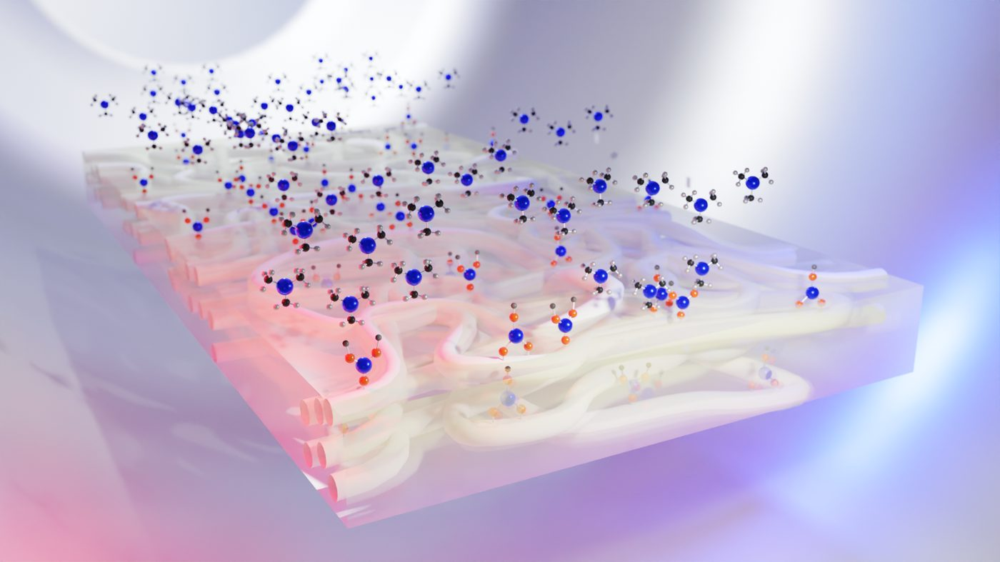
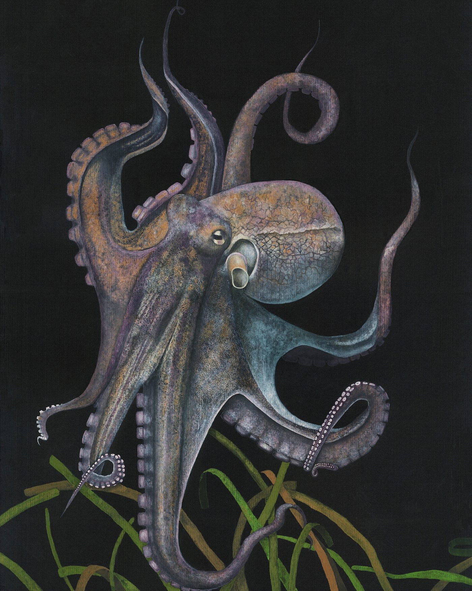
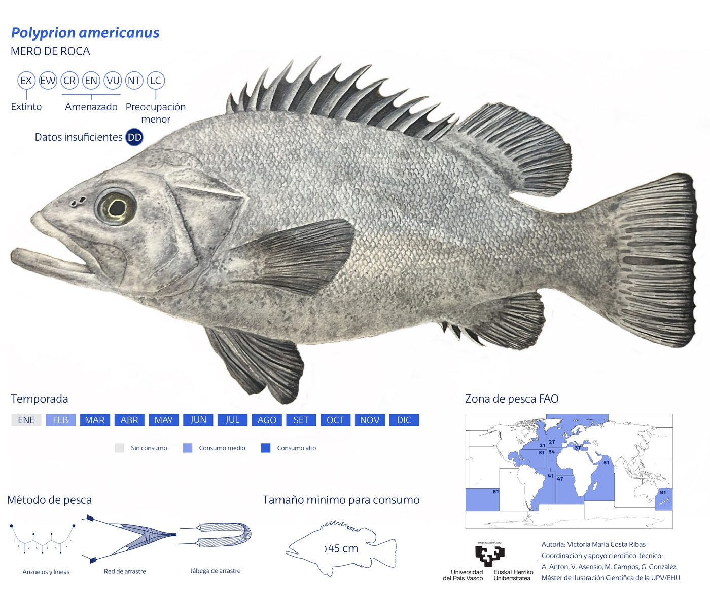
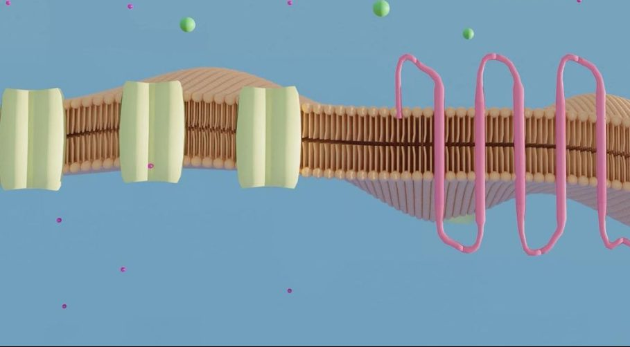
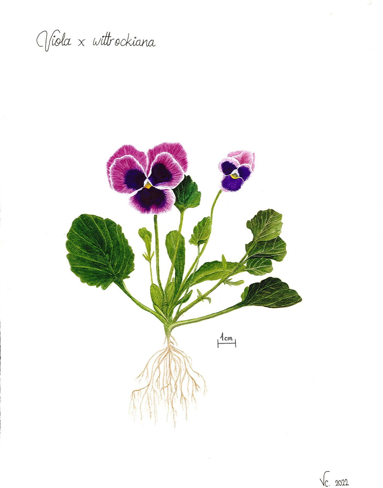
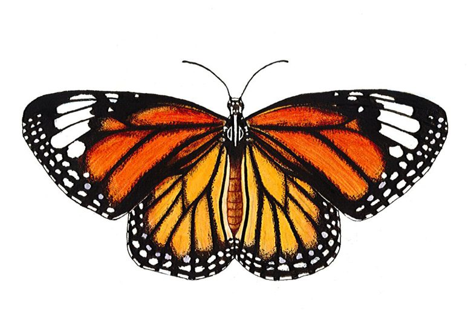
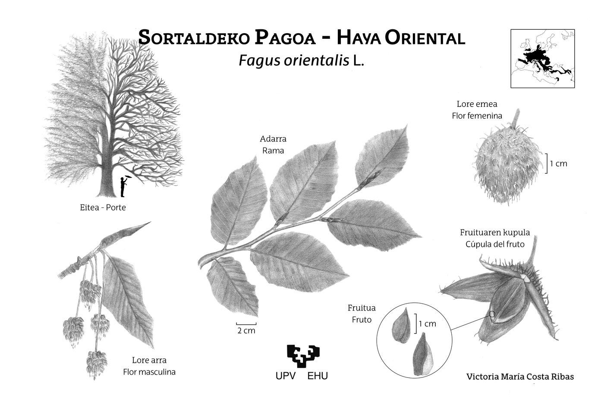
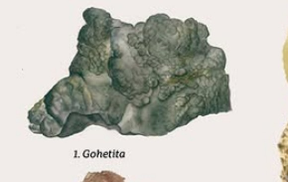

Trabajo real de cada miembro del equipo — a medida que cada portfolio va tomando forma.
Estamos construyendo el portfolio del estudio pieza a pieza. Por ahora puedes ver el trabajo de Victoria; el de Laura y Patxi se irá añadiendo próximamente.

Infografía científica sobre anatomía, migración y conservación de la tortuga laúd.

Visualización 3D de una membrana celular con canales de transporte iónico.

Estudio naturalista en gouache sobre fondo oscuro.

Ficha divulgativa sobre pesca sostenible: temporada, zona FAO y talla mínima.

Modelado y render de una bicapa lipídica con proteínas de membrana.

Estudio botánico en acuarela con detalle de raíz y escala.

Ilustración en tinta y acuarela de Danaus plexippus.

Lámina bilingüe (euskera-castellano) para el arboretum de la universidad.

Pieza para la lámina colectiva de minerales de la mina Malaespera (Bilbao), UPV/EHU.
Portfolio en construcción — próximamente.
Portfolio en construcción — próximamente.
Estudio de espiral logarítmica aplicado a la estructura de un amonites, pensado para figura editorial.
Línea limpia y anatomía simplificada para material educativo sobre cnidarios.
Interpretación gráfica de una secuencia genética, pensada para portada de revista.
Estructura de crecimiento de coral para pieza de divulgación sobre blanqueamiento.
Simetría radial de un organismo planctónico, explorada como patrón editorial.
Patrón estructural de una diatomea, base para una serie sobre vida oceánica invisible.